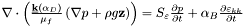

Go to the source code of this file.
Functions/Subroutines | |
| subroutine | diffusion (deltat, info) |
| Calculates pore pressure using fluid mass conservation. | |
| subroutine diffusion | ( | deltat | , | |
| integer | info | |||
| ) |
Calculates pore pressure using fluid mass conservation.
Uses the Finite Element Method to calculate the pressure diffusion of fluids in the rock in response to pressure gradient and rock stress forcing. Uses implicit time step. 
| [in] | Pore | pressure (pfluid) and displacements (disp) of previous time step, material properties (D), and timestep (deltat). |
| [out] | Updated | pore pressure (pfluid). |
Definition at line 41 of file diffusion.f90.
References diffusion_data::a_matrix, element_data::alpha, diffusion_data::bc_dfval, node_data::cord, diffusion_data::d, node_data::disp, diffusion_data::displ, diffusion_data::f, diffusion_data::f1, flux(), diffusion_data::ija, modify2(), sizes::ne, element_data::nop, diffusion_data::p, element_data::pf_el, node_data::pfluid, diffusion_data::q, diffusion_data::s, shape(), diffusion_data::shpp, tetra4(), diffusion_data::ul, diffusion_data::xl, and diffusion_data::xsj.
Referenced by main_3d().
 1.6.1
1.6.1